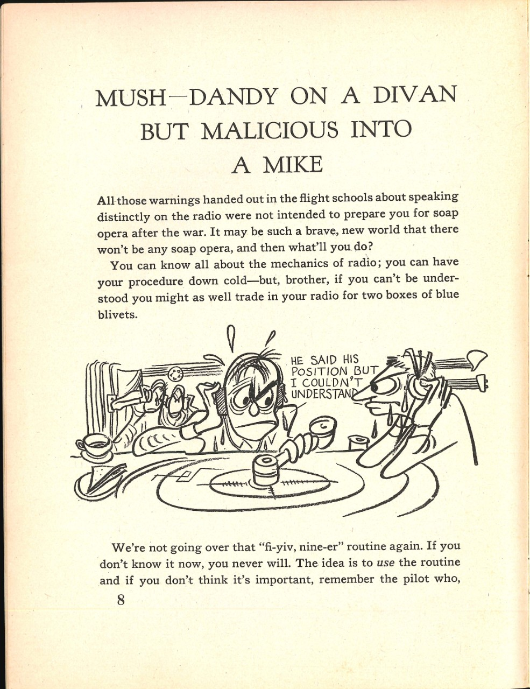
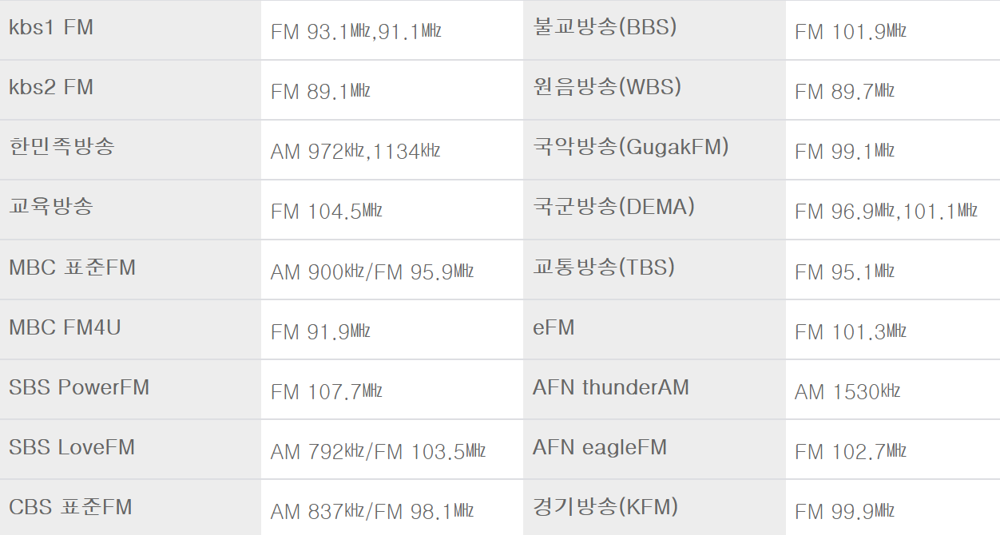
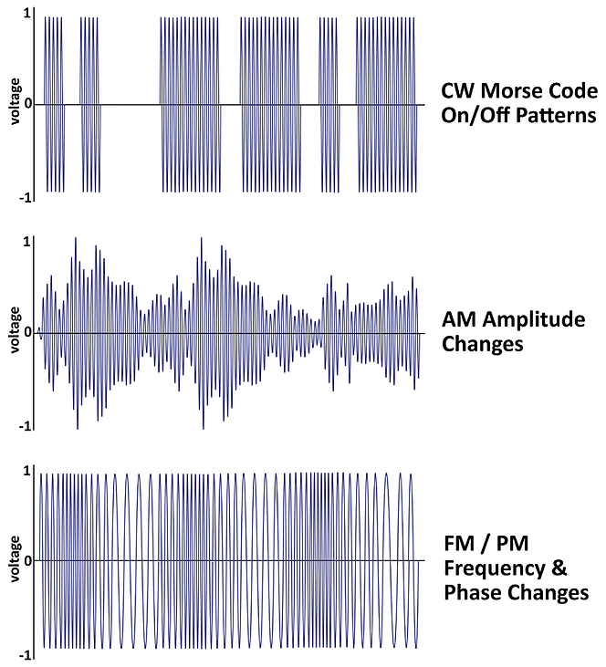
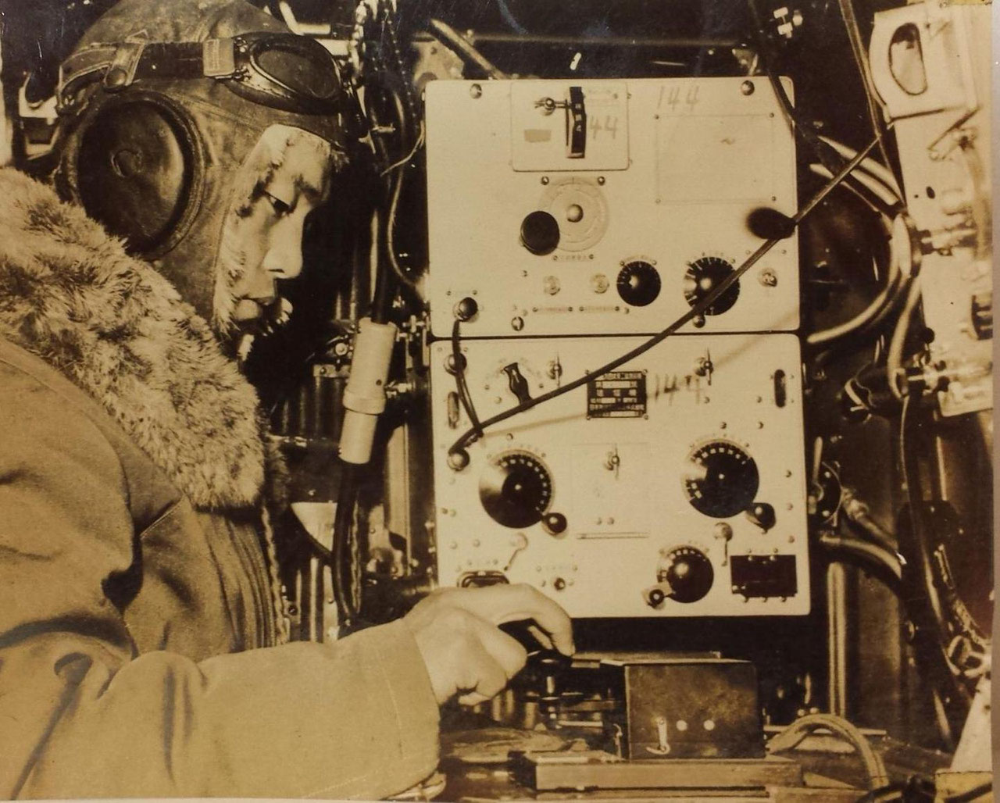
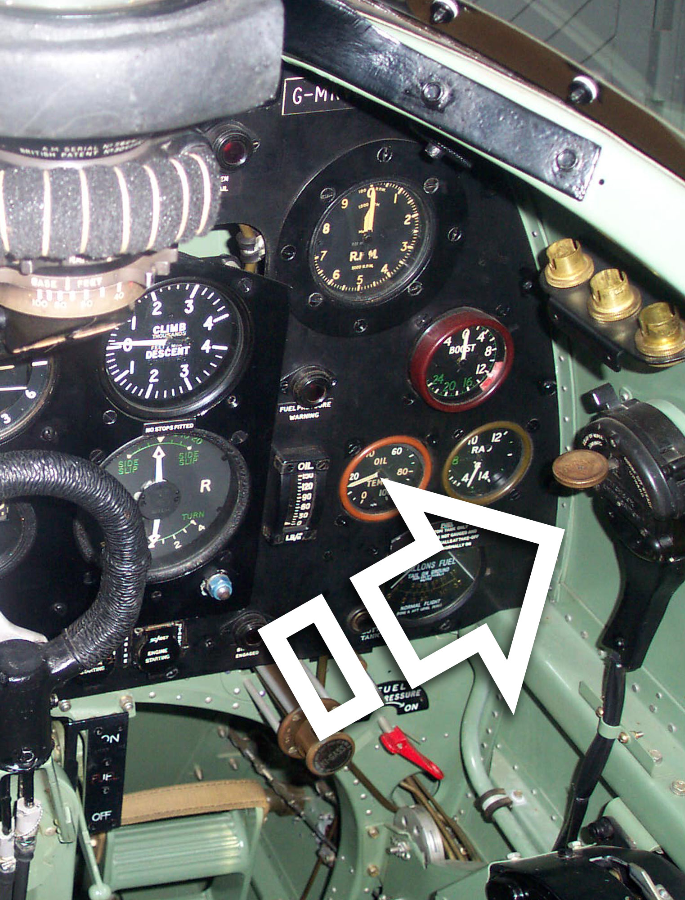
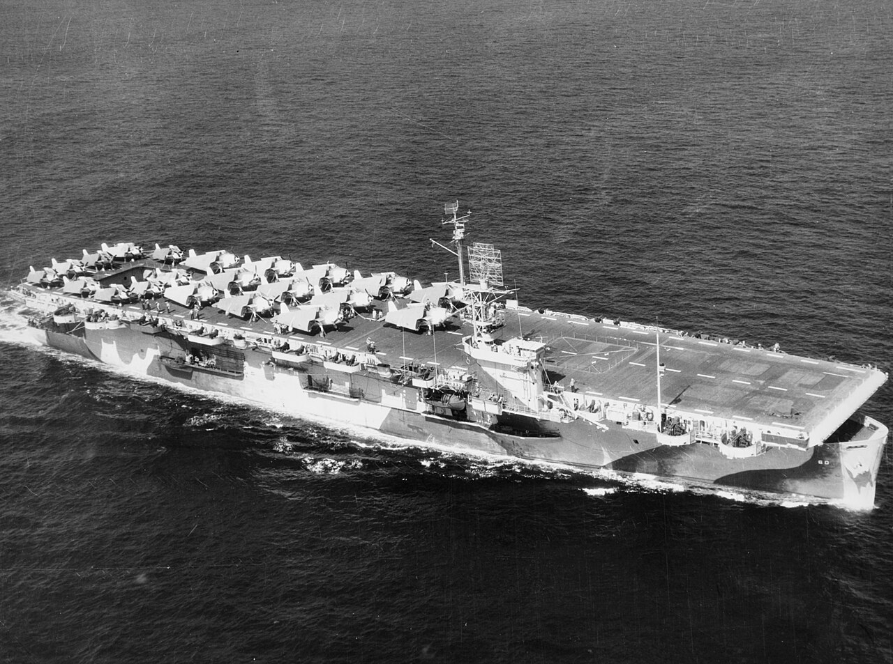

과달카날에서의 레이더 (9) - 대체 뭔 소리였지?
게시: 2024-04-04T06:30:23+09:00
<영어로 9가 nine이 아니라고???> 이 2대의 돈틀리스로부터 정확한 일본 항모의 위치 보고를 받은 엔터프라이즈는 왜 이들을 향해 폭격대를 날리지 않았을까? 요약하면 무선통신 기술의 한계 때문. 전편에서 다른 항공기들도 동일한 문제를 겪고 있었다고 언급했지만, 당일 열대 기후의 불안정한 대기층으로 인한 무선통신 교란이 심했음. 그 때문에 그 돈틀리스들의 소중한 적항모 발견 보고는 엔터프라이즈에서도 들리기는 했으나 정확한 위치와 어느 돈틀리스가 그 보고를 하는 것인지 알아들을 수가 없었음. 플렛처 제독이 알 수 있었던 것은 어느 방향인지는 모르겠으나 돈틀리스의 정찰 범위 안쪽 어딘가에 일본 항모가 있다는 사실 뿐. 이 두 돈틀리스들은 무전을 친 이후 곧장 폭탄 투하를 위해 목숨을 건 다이빙을 시작했고, 이후에는 제로센에게 쫓기며 죽느냐 사느냐의 갈림길에서 탈출길에 나섰으니 같은 내용의 무전을 두 번 세 번 반복하기는 쉽지 않았음. 게다가 무선침묵의 필요성 때문에 엔터프라이즈에서 '잘 안 들렸다, 어디서 적항모를 봤다고?' 라는 무전통신을 반복해서 송신하는 것도 위험했음. 그래서 평소 조종사들은 조종술과 무기 조작법뿐만 아니라 무전통신에 대해서도 교육과 훈련을 받았음. 소위 말하는 radio discipline. 무선통신 규율 교육은 꼭 필요할 때 정확한 용어로 이야기하는 것도 중요했지만, 당시 무전기는 치직거리는 잡음을 피할 수 없었으므로, 그걸 감안해서 똑바로 또박또박 말하는 것도 매우 중요. 가령 아래 그림은 당시 무선통신 규율 교범인데, 문장을 보면 "fi-yve nine-er" routine이라는 말이 나옴. 이건 기본적인 무선통신 용어 훈련. 당시의 조악한 무선통신 품질 때문에, 놀랍게도 '파이브'와 '나인'이 비슷하게 들리는 경우가 많았음. 둘다 '아이'라는 모음이 들어가는데 치직거리는 소음 속에서는 그 모음만 잘 들리기 때문. 그래서 five는 확실하게 파이-브라고 길게 발음하고 nine은 아예 끝에 er라는 모음을 추가해서 niner (나이너)라고 발음하도록 가르친 것. 생각해보면 원, 투, 쓰리 등등 0부터 9까지의 숫자 중에서 같은 모음으로 나오는 숫자가 파이브와 나인 뿐인데다, 무엇보다 위치 정보 등의 숫자가 매우 중요했으므로 이렇게 정한 것.

(본문 해석: "소파(divan) 위에서는 멋지게 들릴 수도 있지만 무선통신에서는 진짜 꽝" 무전통신에서 명확하게 말하는 것에 대해 비행 학교에서 전달된 모든 경고는 종전후 연속극 출연을 준비하기 위한 것이 아닙니다. 연속극도 없는 새로운 세상이 될 수도 있는데, 그렇다면 당신은 무엇을 하시겠습니까? 당신은 무선통신의 구조와 원리에 대해 모두 알 것이고, 절차도 완전히 익혔을 것입니다. 하지만 당신이 하는 말이 상대편에게 전달이 제대로 되지 않는다면 무전기를 그냥 엿바꿔 드시는 것이 나을 수도 있습니다. "그 친구가 자기 위치를 말하긴 했는데 알아들을 수가 없었어!" 우리가 "fi-yiv, nine-er" 교육 과정을 다시 하고자 하는 것은 아닙니다. 이미 알고 있지 않다면, 앞으로도 모르겠지요. 기본 개념은 그런 교육 과정에서 배운 것을 제대로 쓰는 것이고, 그게 중요하지 않다고 생각한다면 그 조종사를 생각하세요....) <일본해군은 디지털로> 그런데 미해군 항모들의 위치를 발견한 일본 수상정들의 무선은 어떻게 쇼가꾸와 즈이가꾸에게 꺠끗하게 닿았을까? 이건 역설적이게도 일본해군의 무전기가 품질이 매우 떨어졌기 때문에 발생한 일. 돈틀리스보다 훨씬 더 장거리를 날아다니던 일본 수상정들은 자신들의 무전기 품질이 매우 떨어진다는 것을 잘 알고 있었으므로, 적함을 발견할 경우 음성 무전통신은 아예 포기하고 훨씬 단순하지만 훨씬 더 먼 거리까지 비교적 또렷이 정보를 보낼 수 있는 모르스 부호 전신을 두들겼음.

(꼭 FM은 고주파, AM은 저주파라는 것은 아니지만 일반적으로 라디오 방송에서 AM은 KHz 대역, FM은 MHz 대역을 사용.)
요즘 자동차 안에서 외에는 라디오를 듣는 사람은 많지 않을 것이고, 특히 AM 라디오를 듣는 분은 거의 없을 듯. 그런데 강원도나 경북의 산간 지방을 운전하다보면 FM 라디오가 나오지 않는 지역이 꽤 많음. 상대적으로 고주파인 FM은 직진성이 강해서 산이나 언덕에 의해 전파가 가려지면 안 들리는 것임. 그러나 상대적으로 저주파인 AM 라디오는 전파가 지면의 곡면을 따라 휘기 때문에 그런 곳에서도 어느 정도 들림. 내가 어릴 때는 AM 라디오도 꽤 들었던 기억이 있음. 그런데... AM 라디오 들어보고 깜놀. 어릴 때 기억보다 음성 품질이 너무 떨어졌던 것. 온통 치직거리는 수준. 요즘 유튭 등 디지털 방송으로 나오는 음성에는 잡음이 없는 이유는 디지털이기 때문. FM (Frequency Modulatio, 주파수 변조)이든 AM (Amplitude Modulation, 진폭 변조)이든 모두 아날로그 방식이라서 필연적으로 잡음이 끼어들 수 밖에 없으나, 0 아니면 1인 디지털 방식이라면 잡음을 제거하는 것이 가능.

(맨 위가 모르스 부호에 의한 on-off 무선전신, 중간이 AM, 맨 아래가 FM 방식)
(모르스 부호표. 흔히 긴급 조난 신호가 왜 SOS냐에 대해 Save Our Souls의 약자라는 설명도 있지만 실제 이유는 그냥 가장 간단하고 외우기 쉬운 부호이기 때문. 그냥 '땃땃땃 뚜-뚜-뚜- 땃땃땃'만 반복하면 됨.) 그런데 반도체가 개발되기 전인 WW2 시절에 디지털 무선통신이 가능한가? 가능했음. 음성 통신은 아니고, 바로 모르스 부호를 타전(on-off keying)하는 radiotelegraphy으로 가능. 이건 주파수든 진폭이든 아예 변조 자체를 하지 않고 대신 on-off 방식으로 끊었다 연결했다 하는 방식으로 dot와 dash 신호를 보내는 것이므로, 아무리 신호가 약하거나 잡음이 심하더라도 제대로 입력만 한다면 정확한 정보를 원거리까지 안정적으로 보낼 수 있었음. 이 방식의 약점은 긴 정보를 보내려면 시간이 많이 걸렸으므로 매우 긴박한 환경에서는 쓰기 어렵고 특히 조종사가 혼자서 조종도 하고 코드표 외워서 타전까지 하는 것은 좀 무리였다는 것.

(이건 일본해군 항공대는 아니고, 일본육군 항공대의 사진이라고. 출처는 https://www.pa3egh.nl/morse-keys-outside-europe/morse-keys-japan/ )

(Dauntless SBD 같은 미해군 함재기들도 저런 morse key sender를 갖추고 있었는지는 모르겠으나, 영국 공군 및 해군 조종사들은 저런 모르스 키 송신기에 익숙해야 했음. 심지어 1인승 전투기인 영국 Spitfire 전투기에도 저런 모르스 키 송신기가 달려 있었고, 모든 조종사들은 1분에 최소 15 단어를 저 송신기로 타전할 수 있어야 비행 자격을 얻을 수 있었음. 특히 저 스핏파이어는 키 송신기가 저렇게 조종석 오른쪽에 달려 있었기 때문에, 송신을 하려면 오른손으로 쥐고 있던 조종간을 왼손으로 바꿔쥐고 오른손으로 타전을 했음. 조종간에는 엄지로 누르는 기관총 버튼이 왼쪽에 달려 있었으므로 반드시 오른손으로만 버튼을 눌러 발포할 수 있었는데, 어차피 사격을 하면서 타전할 수 없었으므로 별 상관은 없었을 듯. 출처는 https://www.recoverycurios.com/spitfire-type-b-5c372-air-ministry-crown-stamped-morse-code-sender-key-2 )
<미해군은 계속 진화한다> 한편, 미해군은 과달카날의 일본군 상륙을 막은데다 경항모이긴 하지만 어쨌거나 항모인 류조를 격침했으므로 나름 승전 분위기. 그럼에도 끊임없는 반성과 개선이 미해군의 강점. 이번 동솔로몬 해전에 대한 반성은 크게 3가지로서 고질적인 레이더의 고도 측정 문제, IFF, 그리고 무선통신. 일단 레이더 고도 측정 문제는 별다른 방법이 없으니 적기의 고도를 측정할 수 있는 레이더 장비 개발을 요구. IFF는 장비의 고장률도 문제지만 별 생각 없이 IFF를 끄고 비행하는 조종사들이 있었다는 점에 대해 반성을 촉구. 무선통신 문제는 더 높은 주파수의 무전기 개발을 요구하면서도, 미해군 조종사들이 공중전에서 너무 많이 떠들어대는 바람에 fighter net에서 레이더 관제사가 조종사들에게 제대로 지시를 내릴 수가 없다는 점을 지적하며 효율적인 무선통신 규율 정책을 권고. 그러나 그에 대해서 일부 고참 조종사들은 삶과 죽음이 왔다갔다 하는 공중전 속에서는 동료들과 활발히 소통하는 것이 팀웍과 사기 진작에 큰 도움이 된다면서 반발. 하지만 결국 수다성 무전은 가능한한 줄이는 방향으로 결정. 한편, 항공단 편제도 개선. 고질적인 문제 중 하나는 1번 항모의 관제사가 2번 항모의 전투기들을 지휘하는데 있어 아무래도 신뢰와 협조가 제대로 안 되더라는 것. 부대마다 사용하는 용어도 일부 다른 것이 있었지만, 아무래도 결국 무전기 속에 들리는 목소리가 누구인지 안다는 것이 조종사들에게 신뢰를 주는데 있어 큰 역할을 했던 것. 그래서 사라토가의 함장이 제시한 방안은 2척의 항모가 하나의 항모전단을 구성할 때는, 한 척에는 아예 함대 방어를 위한 전투기들만 몰아 배치하고, 나머지 한 척에는 폭격기와 뇌격기, 그리고 자함 방어를 위한 최소한의 전투기만 싣자는 것. 그렇게 모든 조종사들이 한 배에서 같은 밥을 먹고 서로 얼굴을 알게 하자는 것. 이 아이디어는 많은 지휘관들이 적극 지지.

(사진은 Casablanca급 호위항모인 USS Guadalcanal (CVE-60, 1만1천톤, 19노트). 대서양의 유럽 수송로를 담당한 이 호위항모의 비행갑판에 F4F Wildcat 전투기 9대와 TBF Avenger 뇌격기 12대가 보임. 대서양에서 주로 대잠전을 수행했던 호위항모들에게는 이 조합이 표준. 호위항모 운용 초기에는 2대의 호위항모가 짝을 이루어 다녔고, 한 척은 주로 전투기를, 다른 한 척은 모조리 뇌격기를 운용하는 경우가 많았음. 이유는 훈련이 부족하여 미숙한 정비사들과 갑판 요원들에게 그냥 단일 기종의 운용만 하도록 하는 것이 더 효율적이기 때문이었다고.)